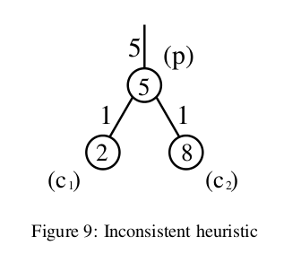
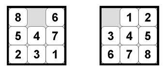

Consistent and Admissible Heuristics
Any consistent heuristic is also admissible. But when is a heuristic admissible but not consistent (monotone)?
Please provide an example in which this is the case.
Answer
As Russel and Norvig point out in Artificial Intelligence: A Modern Approach (the most commonly used AI textbook) it is challenging to come up with a heuristic that is admissible but not consistent.
Obviously, you can select values for nodes in a graph such that the heuristic they represent is admissible but not consistent. This paper by Felner et al has a nice example of the two ways that this is possible, but it's a little dense, so I'll summarize:

- This heuristic is inconsistent at
c1because it is giving a lower (i.e. less informative) lower bound on the cost to get to the goal than its parent node is. The cost estimate of getting to the goal through the parent node is at least 10 (because the cost of the path topis 5 and the heuristic estimate atpis also 5). The cost estimate for getting to the goal throughc1, however, is just 8 (cost of parent (5), plus cost of path from parent (1), plus heuristic estimate atc1(2)). - Since this graph is undirected, this heuristic is also inconsistent at
c2, because going fromc2tophas the same problem as above.
Felner et al also provide a few concrete examples of an admissible but inconsistent heuristic. Consider the 8-puzzle problem:

In this puzzle there are 8 sliding tiles numbered 1-8, and one empty space. The tiles start out out of order (as in the image on the left). The goal is to get the puzzle into the state shown above on the right exclusively by sliding tiles into the empty space. The classic heuristic for this problem (Manhattan distance of each tile to the location where it is supposed to be) is admissible and consistent.
However, you could come up with a different heuristic. Maybe you just want to look at Manhattan distance (i.e. the number of squares away) of the 1, the 2, and the 3 to the locations in which they are supposed to be in the goal state. The heuristic, while less informative than Manhattan distance of all tiles, is still admissible and consistent.
But let's say that you choose an additional group of squares, perhaps 5, 6, and 7. And then let's say that the way you calculate the heuristic at each node is by randomly selecting one of those sets (1,2, and 3) or (5, 6, and 7) and computing their Manhattan distance to their goal locations. This heuristic is still admissible - it can only ever underestimate or match the number of moves needed to get to the goal state. However, it is no longer consistent - there isn't a clear relationship between the heuristic estimates at each node.
Suggest
Admissible heuristic
never overestimates the cost to reach the goal. f(n) never overestimates the the cost of a solution along the current path through n. An obvious example of an admissible heuristic is the straight-line distance.
Consistency heuristic
- Consistent heuristic: for every node n and every successor n' of n generated by any action a: h(n) ≤ c(n,a,n') + h(n')
- Required only for applications of A* to graph search
- Every consistent heuristic is also admissible.